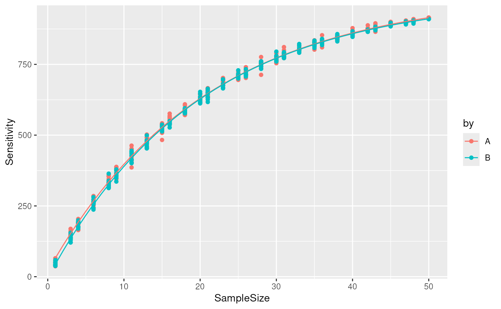

The cumulative sensitivity curve is used to evaluate if the sample size is sufficient to accurately estimate the total sensitivity. If it is not the case, an asymptotic regression model may provide a prediction of the total sensitivity if more samples would have been acquired.
cumulativeSensitivityCurve(
object,
i,
by = NULL,
batch = NULL,
nsteps = 30,
niters = 10
)
predictSensitivity(df, nSamples)An object of class QFeatures.
The index of the assay in object. The assay must
contain an identification matrix, that is a matrix where an
entry is TRUE if the value is observed and FALSE is the
value is missing (see examples).
A vector of length equal to the number of columns in
assay i that defines groups for a cumulative sensitivity
curve will be computed separately. If missing, the sensitivity
curve is computed for the completd dataset.
A vector of length equal to the number of columns in
assay i that defines the cell batches. All cells in a batch
will be aggregated to a single sample.
The number of equally spaced sample sizes to compute the sensitivity.
The number of iteration to compute
The output from cumulativeSensitivityCurve().
A numeric() of samples sizes. If Inf, the
prediction provides the extrapolated total sensitivity.
A data.frame with groups as many rows as pairs of cells
and the following column(s):
jaccard: the computed Jaccard index
by: if by is not NULL, the group of the pair of cells
for which the Jaccard index is computed.
As more samples are added to a dataset, the total number of distinct features increases. When sufficient number of samples are acquired, all peptides that are identifiable by the technology and increasing the sample size no longer increases the set of identified features. The cumulative sensitivity curve depicts the relationship between sensitivity (number of distinct peptides in the data) and the sample size. More precisely, the curve is built by sampling cells in the data and count the number of distinct features found across the sampled cells. The sampling is repeated multiple times to account for the stochasticity of the approach. Datasets that have a sample size sufficiently large should have a cumulative sensitivity curve with a plateau.
The set of features present in a cell depends on the cell type.
Therefore, we suggest to build the cumulative sensitivity curve
for each cell type separately. This is possible when providing the
by argument.
For multiplexed experiments, several cells are acquired in a run.
In that case, when a features is identified in a cell, it is
frequently also identified in all other cells of that run, and
this will distort the cumulative sensitivity curve. Therefore, the
function allows to compute the cumulative sensitivity curve at the
batches level rather than at the cell level. This is possible when
providing the batch argument.
Once the cumulative sensitivity curve is computed, the returned data can be visualized to explore the relationship between the sensitivity and the sample size. If enough samples are acquired, the curve should plateau at high numbers of samples. If it is not the case, the total sensitivity can be predicted using an asymptotic regression curve. To predict the total sensitivity, the model is extrapolated to infinite sample size. Therefore, the accuracy of the extrapolation will highly depend on the available data. The closer the curve is to the plateau, the more accurate the prediction.
## Simulate data
## 1000 features in 100 cells
library(SingleCellExperiment)
id <- matrix(FALSE, 1000, 1000)
id[sample(1:length(id), 5000)] <- TRUE
dimnames(id) <- list(
paste0("feat", 1:1000),
paste0("cell", 1:1000)
)
sce <- SingleCellExperiment(assays = List(id))
sim <- QFeatures(experiments = List(id = sce))
sim$batch <- rep(1:100, each = 10)
sim$SampleType <- rep(c("A", "B"), each = 500)
sim
#> An instance of class QFeatures containing 1 assays:
#> [1] id: SingleCellExperiment with 1000 rows and 1000 columns
## Compute the cumulative sensitivity curve, take batch and sample
## type into account
csc <- cumulativeSensitivityCurve(
sim, "id", by = sim$SampleType,
batch = sim$batch
)
predCSC <- predictSensitivity(csc, nSample = 1:50)
library(ggplot2)
ggplot(csc) +
aes(x = SampleSize, y = Sensitivity, colour = by) +
geom_point() +
geom_line(data = predCSC)

## Extrapolate the total sensitivity
predictSensitivity(csc, nSamples = Inf)
#> SampleSize Sensitivity by
#> 1 Inf 1001.5121 A
#> 2 Inf 990.6431 B
## (real total sensitivity = 1000)